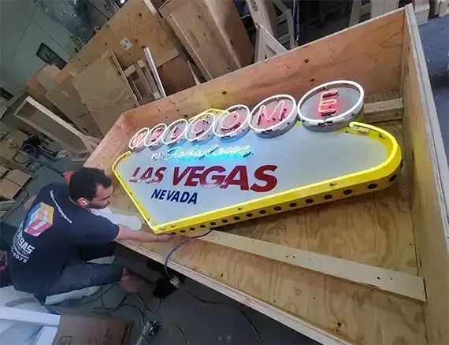

The Benefits of Using a Local Company for Small Moves
Why Local Companies Are Best for Small Moves
Moving, whether across town or just a few blocks away, can feel overwhelming. Even small moves—relocating a few cherished items like electronics, antiques, or large, cumbersome pieces—require careful planning, coordination, and execution.
Local moving companies thrive on their reputation within the community. They know the area's streets, traffic patterns, and quirks, which translates into faster service, fewer hiccups, and lower overhead costs that trickle down to you.

What You Get With a Local Mover
National chains often charge a $200 minimum, even for an hour-long job. A local mover, familiar with your area, might quote $80 for the same task — no long-distance fees or surcharges.
A local crew knows the fastest routes and quickest fixes — picking up in the morning and delivering by noon, without waiting on a distant dispatcher.
Local movers are part of your community. That accountability means custom padding for an heirloom, or disassembling a bookshelf on the spot to make it fit.
Established relationships with nearby storage facilities mean pickup, storage, and redelivery — all coordinated by your mover, on your timeline.

Leveraging Local Storage with Full-Service Options
Sometimes a small move isn't just about getting from point A to point B—it's about a pit stop in between. Local moving companies often have established relationships with nearby storage facilities, offering a one-stop solution: pickup, storage, and redelivery, all tailored to your timeline.
Oversized pieces are no exception — a local facility, paired with your mover, can offer custom crating and oversized options, so you're never paying inflated transport fees to a distant warehouse.
Practical Tips for Hiring a Local Mover
A little preparation goes a long way. Here's how to make it work.
Research and Ask Around: Check online reviews, but also tap into local word-of-mouth. Neighbors or friends might recommend a mover they've used for similar jobs—like hauling a piano or a fragile chandelier.
Get a Detailed Quote: Specify your items (e.g., "vintage record player, 50 vinyl records, oak bookshelf") so the mover can estimate time and resources accurately. Local companies are often happy to provide free, no-obligation quotes.
Ask About Storage Partnerships: If you anticipate needing temporary storage, inquire about full-service options. A good local mover will know the best facilities and might even bundle the cost into your move.
Schedule Flexibly: Local movers often have more availability for small jobs. Booking midweek or during off-peak hours could snag you an even better rate.
Communicate Special Needs: Mention if your electronics need extra padding, your antiques require climate control, or your large items need disassembly. Local crews are used to customizing their approach.
Small Moves, Real Savings
Sarah, a graphic designer, needed to move her $2,000 iMac and external drives to a new studio five miles away. A local mover quoted her $100, picked it up in a padded van, and delivered it within two hours. A national company's $250 minimum felt like overkill for such a short trip.
John inherited a 19th-century dresser and wanted it moved to his sister's house nearby. A local mover, known for handling estate pieces, wrapped it carefully and delivered it for $120—saving him the $50 ‘specialty fee’ a big firm would've charged.
Maria bought a massive sectional sofa at an auction but couldn't fit it in her apartment yet. Her local mover transported it to a full-service storage unit for $150, including a month's rent, and promised delivery when she was ready—no extra trips required.
For small moves involving electronics, antiques, or large, unwieldy items, a local company offers a winning combination of cost savings, time efficiency, and personalized care — with the best help often right around the corner.
Ready to Protect What Matters?
Talk to our team about short- or long-term storage, fulfillment, and white-glove handling built for your needs.